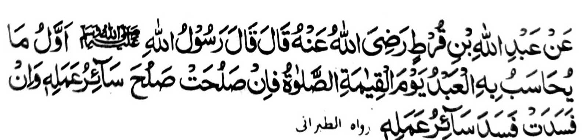

So Abdullah bin Qurt na pitharo iyan a pitharo o Rasulollah (Sallallaho Alaihi Wasallam), "Aya paganay a phamagitongen ko oripen ko Gawi-i a Qiyamah na so Sambayang. O maka-apas na phaka-apas so langon o amal iyan. O peman o mabinasa na khabinasa so langon o amal iyan."
So Umar (Radhiallaho ’Anho) ko sekaniyan i Khalifah na piyakalangkap iyan ko langon o manga amir a kamimilikan iyan sa gi-i niyan tharo-on, "Ini-itong aken so Sambayang sa piyamoro-poroan a paliyogat. So tao a mipamayandeg iyan so Sambayang na mararani a miphamayandeg iyan phiya-piya so manga ped a sogo-an o Islam; ogaid na o ibagak iyan so Sambayang, na mararani a mabinasa niyan so manga ped /a sogo-an) o Islam."
Giyangka-iya miya-aloy a katharo o Nabi (Sallallaho 'Alaihi Wasallam) ago giyangkanan a kalangkapan o Hazrat Umar (Radhiallaho 'Anho) na miyabager mambo o isa a Hadith, "So Saitan na ika-alek iyan so Muslim si-i ko tenday a kasisiyapa niyan ko Sambayang; ogaid na anda den i kindarainonen iyan ko Sambayang na tepadan sekaniyan o Saitan na panagontamanan iyan a kadadaga niyan non, na oriyan niyan na makalebod rekaniyan so kabodiyoka niyan non ko kapakadakel a karibatan a manggola-ola niyan ago kapakasogok iyan sa manga ala a dosa. Giya-i mapemama-ana o katharo o Allah a Soti ko kiyatharo-a Niyan non,
"Mata-an a so Sambayang na phakasapar ko pakasisingay ago so manga rarata. " [Soorah Al-Ankabut:45]